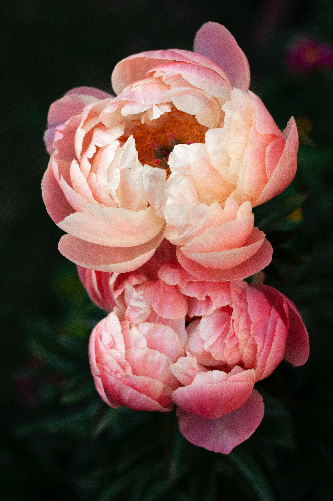

Пионы
Пио́н (лат. Paeónia) — род травянистых многолетников и листопадных кустарников (древовидные пионы). Единственный род семейства Пионовые (Paeoniaceae), ранее род относили к семейству лютиковых (Ranunculaceae). Пионы цветут в конце весны, ценятся садоводами за пышную листву, эффектные цветы и декоративные плоды (у некоторых видов).
Распространение и экология
Виды семейства произрастают в субтропиках и умеренных районах Евразии и Северной Америки. Пионы предпочитают хорошо освещённые и прогреваемые солнцем участки, хотя могут перенести и небольшое затенение в середине дня. Лучший срок посадки пионов — август—сентябрь. Пионы размножают делением кустов, но если нужно получить много растений понравившегося сорта, то можно размножить отводками, стеблевыми и корневыми черенками. Самый надёжный способ — размножение почками с кусочками корневища. В каждой части корневища должно быть не менее 2—3 почек.
Ботаническое описание
Многолетнее травянистое, полукустарниковое или кустарниковое растение с несколькими стеблями (стволами) высотой до 1 м. Корневище крупное с мощными, утолщенными, шишкообразными корнями. Почки с немногочисленными, черепичато налегающими друг на друга чешуями. Листорасположение очерёдное. Листья непарно перистораздельные или тройчатые, с широкими или узкими долями, тёмно-зелёные, реже сизые, осенью жёлтые, бурые, красноватые или тёмно-фиолетовые. Цветки диаметром до 15—25 см, одиночные, с чашечкой и венчиком. Чашечка остающаяся, более или менее кожистая, из 5 тёмно-зелёных или красноватых чашелистиков; лепестки в числе 5, реже более, крупные, много крупнее чашелистиков, широкие, на конце часто выщербленные, белые, розовые, красные, кремовые или жёлтые, иногда с тёмными пятнами при основании. Тычинки многочисленные; пестиков 1—8, сидящих на мясистом диске. Плод — сложная многолистовка звёздообразной формы. Каждая листовка открывается по шву и имеет несколько семян, прикрепленных к краю брюшного шва. Семена крупные, округлые или овальные, чёрные или чёрно-бурые, блестящие. Все виды рода Paeonia можно распределить на две группы в зависимости от числа хромосом: 10—20 (диплоидное число) или 5—10 (гаплоидное число). Для селекции принадлежность к определенной группе имеет важное значение. От скрещивания диплоидных видов и сортов пионов с тетраплоидными, и наоборот, получают триплоидные гибриды F1. Из-за непарного числа хромосом мейоз у триплоидов абсолютно неправилен, поэтому они стерильны. В F1 обычно в большей степени проявляется гибридная мощь потомства. Эффект гибридной мощи, или гетерозиса, заключается в превосходстве гибридов F1 по ряду признаков и свойств над исходными родительскими формами. Гетерозис может проявляться по одному или нескольким признакам. Вегетативное размножение пионов позволяет отобрать и закрепить любую ценную стерильную форму.
Значение и применение
Согласно китайским источникам, интерес к пионам как декоративным растениям начался в период правления династий Цинь и Хань, ранее 200 лет до н. э. Таким образом, пионы в культуре уже более 2000 лет.Пион лекарственный и Пион уклоняющийся используют в качестве лекарственного сырья. Сырьё используют для приготовления настойки, которая применяется как седативное средство. До середины XX века селекционная работа с пионами в России не проводилась. Началась она только в послевоенное время, когда осуществился сбор коллекций лучших зарубежных сортов. К началу XXI века в регистре пионов насчитывалось не более 200 отечественных сортов. В настоящее время на территории России выращивается более 1 тысячи сортов. Большая часть из них иностранного происхождения. В Китае опавшие лепестки пионов подсушивают и подслащивают как чайное лакомство. Пионовая вода, настой лепестков пиона, использовалась для питья в Средние века. Лепестки можно добавлять в салаты или в пунши и лимонады.
Сорта
Сорта пиона различаются величиной, окраской, строением цветков, продолжительностью цветения, высотой и формой куста. В окраске сортов присутствуют различные оттенки белого, жёлтого, оранжевого и красного цвета. Тона яркие и сочные или мягкие, приглушённые, с едва уловимыми переходами к другому цвету. Старые французские сорта травянистых пионов часто выводили в основном на срезку и прочность стеблей не имела никакого значения. Сейчас[когда?] появилось направление ландшафтных пионов, и американская ассоциация пионоводов ввела специальную премию «Лучший ландшафтный пион». То есть помимо того, что они, безусловно, обращают внимание на качество и красоту пиона, они еще отдельно оценивают его ландшафтные свойства. По данным Международного регистра (APS) в начале двухтысячных было зарегистрировано более 4664 сортов травянистых и более 500 сортов древовидных пионов.
По строению цветка сорта делят на:
- немахровые, имеющие только один ряд широких лепестков ('Golden Glow', 'Надя'),
- полумахровые ('Легион Ханкор')
- японские ('Moon of Nippon')
- анемоновидные ('Лонгфелло')
- розовидные ('Роберт Оутен')
- корончатые ('Канзас')